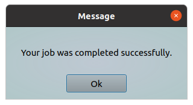

This tool provide you a simple way to include message boxes into your shell scripts.
This tool will show a message box. Message text should be provided via command line.
You can show as a simple text messages, as a messages in html format.
Options:
| Short | Long | Description |
|---|---|---|
| -h | --help | Will show help and exit |
| -m | --message "Your text message" | Text string which will show in dialog (default "Message Text"). You can use HTML markup language for better view. |
| -t | --dtitle "New dialog title" | A text string which will show in dialog header (default "Message"). |
| -b | --btntext "New button label" | "Ok" button will labeled with this text (default "Ok"). I.e. you can rename this button. |
| -x | --sizex window_width | This parameter allow you to customize window width (default 300 pixels, minimum 300) |
| -y | --sizey window_height | This parameter allow you to customize window height (default 120 pixels, minimum 120) |
Examples:
Show a simple text message in dialog box
In this example we will show a simple text message.
#!/bin/bash
# some actions here
$(ytools-show-message --message "Your job was completed successfully.")
As a result following window will appear:

Advanced using
In this example we will use a few abilities. We change dialog title, we will use a HTML in our message, and we will rename "Ok" button.
#!/bin/bash
# some actions here
$(ytools-show-message -t "I want to say you something..." -m "<b>I notice,<br>that you are a very good person! </b>" --btntext "I agree")
# other actions...
As a result following window will appear:
Customizing window size
In this example, our message was too long to fit well in the window. We just set the correct size.
#!/bin/bash
# some actions here
$(ytools-show-message --sizex 600 --sizey 250 --message "<h3>Your operation was completed successfully.</h3>Now you can safely pour yourself a cup of tea and enjoy the work done.<br>Thanks for using our program friend.<br><i>(c) Your company dot com</i>")
# other actions...
As a result following window will appear:
Show help
This command will show a help message.
ytools-show-message --help
As a result following information will shown:
*** ytools-show-message - simple program which show dialog with custom text message. *** Usage: ./ytools-show-message [options] -h, --help Display this help and exit. -m, --message "Text message" Text string which will show in dialog (default "Message Text"). You can use HTML markup language for better view. -t, --dtitle "Dialog title" This text will show in dialog header (default "Message"). -b, --btntext "Ok" Button will labeled with this text (default "Ok"). -x, --sizex window_width This parameter allow you to customize window width (default 300 pixels, minimum 300). -y, --sizey window_height This parameter allow you to customize window height (default 120 pixels, minimum 120).